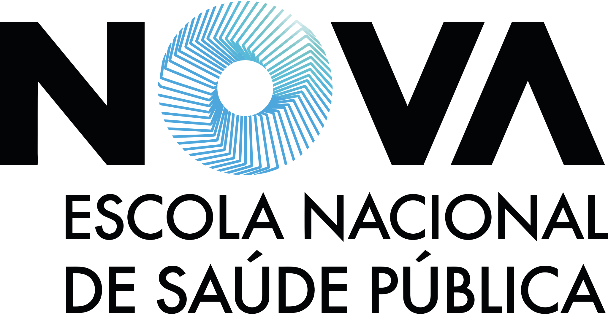

Find your school
Each repository is a ready-to-use snapshot of the main template, pre-configured for one institution and kept automatically in sync. Recognise your cover, take the repository.
Overleaf imports the repository into a new Overleaf project — this needs a paid plan, as the template does not compile within the Free plan's 20-second limit. Inscrive imports the same repository the same way, into a project of its own, and likewise needs a PRO account to compile. Free alternatives include ScienHub and Prism, where you upload the ZIP yourself.
Universidade NOVA de Lisboa
NOVA FCT — Faculdade de Ciências e Tecnologianova-fct
NOVA FCT — CBBInova-fct-cbbi
NOVA FCT — DI-ADCnova-fct-di-adc

Escola Nacional de Saúde Pública (ENSP)nova-ensp
Instituto de Tecnologia Química e Biológica (ITQB)nova-itqb
Faculdade de Ciências Sociais e Humanas (FCSH)nova-fcsh
NOVA Information Management School (NOVA IMS)nova-ims External
Universidade de Lisboa
Faculdade de Ciências, ULisboa (FCUL)ulisboa-fcul
Instituto Superior Técnico (IST)ulisboa-ist
Instituto Superior de Economia e Gestão (ISEG)ulisboa-iseg
Faculdade de Medicina Veterinária (FMV)ulisboa-fmv
Faculdade de Farmácia (FFUL)ulisboa-fful
· Porto · Minho · Lusófona · ISCTE · Politécnicos · outras
Faculdade de Ciências, UPorto (FCUP)uporto-fcup
Universidade do Minhouminho
Universidade Lusófona — DEISIulht-deisi
Universidade Lusófona — MGEulht-mge
ISCTE-IUL — ETAiscteiul-eta
Instituto Superior de Engenharia de Lisboa (ISEL)ipl-isel
Escola Superior de Tecnologia de Setúbal (ESTS)ips-ests
Escola Superior de Enfermagem do Porto (ESEP)other-esep

Humboldt-Universität zu Berlin (HU Berlin)other-huberlin
Not listed? Use the main repository and select your school in 0-Config/1_novathesis.tex.
A card marked External is kept outside the novathesis organisation, by its own maintainer and on its own release cycle, so it may lag behind the current version.
Main repository